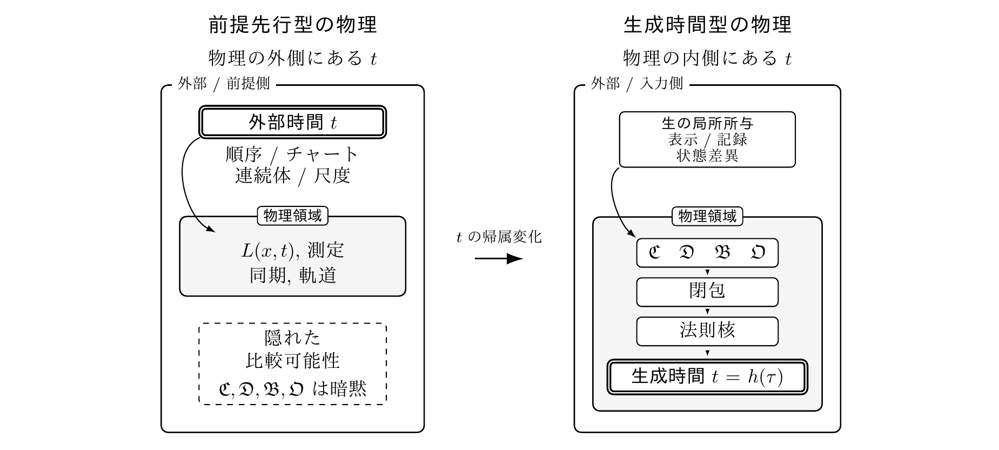

日本語原典
時間変数を物理法則の前提から帰結へ移す：局所比較による時間成立の完全記述と破綻分類の一般理論
LCTRの考え方を読む
要旨
時間参照の局所比較理論（LCTR）は、物理法則に現れる時間変数を、法則記述の原始前提から、理論内部で物理的成立根拠を生成した後に使用できる表現へ移す。本稿が変更する対象は、時間変数を法則へ投入する以前に、その成立根拠と使用資格を構成しなければならないという、理論物理が法則を記述する際の前提順序である。
その理論構造は、計算機科学の型、依存、状態および変更影響に関する設計原理を、物理時間の生成、使用資格、失効局在化および下流再生成を規定する数理構造として統合する。
この構成は、装置や対象に生じた局所的な表示と状態差を記録として保持し、比較に必要な情報がどこで結び付くかを、時間量を用いずに確定するところから始まる。そこから比較結果の統合と順序、運動記述と時間表現、法則内で使用できる時間変数の構成へ進む。連続近似の有効域と微分形式についても、それぞれの成立条件を定める。時間変数の使用は、当該使用に至る生成依存上の成立条件が満たされる場合にのみ許される。LCTRは、この生成によって時間内容の同一性、前後関係、比較可能性と比較不能性、線形順序および実数値表現の成立条件を順に与え、時間構造の成立と時間座標の選択を分離する。この構成により、LCTRは物理時間を語義ではなく成立条件によって構成的に定義する。
生成過程の条件が満たされない場合、本稿の監査は、生成依存上で最初に失われた条件を特定し、その位置に不成立を局在化する。そのうえで、時間変数の成立域、最初の失効位置の集合、近似尺度の境界情報、失効原因、および構造上の負担を返す。これにより、連続近似と微分形式について、使用できる範囲、失効する位置と理由、および修復して再生成または再計算すべき対象を、一つの依存順序に沿って示す。したがって、この監査は連続と微分に対し、使用条件と失効原因を伴う条件付きの動作保証を与える。LCTRは、古典的連続時間の成立上の位置を、法則記述の原始前提から、物理的成立条件と最大有効域をもつ生成済み近似表現へ変更する。
この監査は、形式的な理論条件と物理的実現条件の双方を監査対象とする。理論条件と工学条件を異なる種類の条件として区別したまま、物理担体、記録、通信、有限分解能および証拠の来歴を一つの監査上の依存関係へ接続し、物理的実現と使用可能範囲の提示までを理論の成立責任に含める。複数対象を同一の時間表現上で記述し、同時刻判定、同期および共通時間表現を使用する資格は、各対象の物理担体、記録、情報結合、通信および多対象関係が成立する領域で得られ、遠隔または大域的な構成では輸送と貼り合わせの整合条件をさらに要する。
本稿では、時間内容を非時間的物理入力から成立させる完全な生成経路を欠いたまま、その時間内容を法則の演算または成果の導出へ投入することを原始時間入力と呼ぶ。数学的一貫性、予測性能および経験的適合は、原始時間入力に欠落している生成経路を補わない。測定、予測、模型適合または計算の成功が直接支持する範囲を証拠効力域と定める。成果を別の対象、述語、証拠の型、成立条件または適用域へ移す主張は、その証拠効力域を越える。
この基準により、古代から現代までの理論、実験、計量標準および工学にまたがる代表的72資料を監査した。その全てに原始時間入力とそれに依存する成果があった。使用する時間内容の全体を非時間的な物理入力から生成した資料は一件もなかった。生成過程の一部に相当する物理的関係を備えた資料でも、使用する時間内容全体の生成には到達しておらず、原始時間入力とそれに依存する成果が残る。この全件一致は、原始時間入力が特定の時代や分野に限られず、物理学の歴史を通じて反復してきたことを示す。
原始時間入力を含む現行の理論記述は、物理時間成立資格を満たさない。したがって、現代物理学は現在の時間変数使用のままでは成立しない。原始時間入力が使用に必要な条件を背景化し、独立証拠が同じ条件の実失効と下流成果への依存到達を確定する場合、その成果自体も当該評価領域で使用資格を失い、修復後の再生成または再計算を要する。一方、既存の数学的、実験的、工学的成果と物理関係は証拠効力域内で保持され、時間内容とその成立根拠を生成し、成立域と失効位置を監査した範囲で安全に再使用できる。時間次元を含むか、時間を用いて定義される物理量についても、物理関係の保持と時間依存表現の使用資格を分離し、後者を時間生成後の成立域で定める。
原始時間前提の資格失効、既存成果の保持および安全な再使用を統合する成果保存的再基礎化は、外部時間の除去と物理時間の生成を、別の責務として区別する。記録、比較、対象状態の差異および観測者側での情報結合から、法則内で使用できる時間を生成する。時間順序の生成と因果順序の構成は別の責務であり、因果順序の成立から時計尺度、時間間隔または法則時間の成立は導かれない。この生成順序は、周期、振動数およびHzを生成後の計量成果として定め、ローレンツ変換の作用対象を生成済み時間表現と空間表示として確定し、局所固有時と大域法則時間を別の成立段階へ分離する。量子重力の時間問題を法則時間の使用資格の問題へ変更し、時間の矢を生成済み時間表現への後続の向きづけ条件として定め、時間の創出、創発、回復および非存在に、生成経路または代替構造と全時間内容・後続成果からの原始時間依存排除を証明する責務を課す。その生成依存上で、従来別個の時間問題として論じられてきた各問題を、異なる失効位置へ配置する。これにより、古典物理から相対論、計量・工学、量子重力・宇宙論までを、時間を成立させるための負担、有効域および失効位置という共通の軸で比較できる。
この共通の軸のもとで形式証拠と言明証拠を照合すると、相対論の時間伸縮説には二段階の誤認が認められる。第一段階では、物理的成立根拠が生成されていない時間を、時計、振動子、信号、記録などの物理担体から独立した「時間そのもの」として法則に先行させる。第二段階では、重力や運動に応答した物理担体上の比較差を、その「時間そのもの」の伸縮へ帰属させる。また、時間の不存在を述べる言明と時間そのものへの属性付与が同じ説明体系に併置される場合、両者が同一の時間内容型と適用域を対象とすれば両立せず、異なる対象または適用域を対象とすればその切替の明示を要する。時計指示差、時計率差、固有時差、座標差その他の関係量への切替から、物理担体と独立した「時間そのもの」の属性変化は導かれない。さらに、その時間属性を生命過程へ移し、物理担体についての実験成果の効力を生命過程の直接実証へ拡張する連鎖は、生命適用を伴う三段階誤認をなす。より一般には、限定された計算、予測、模型適合または実験の成功が、数式全体の物理的成立、未生成時間の資格、未測定対象への適用、時間に関する存在論的主張へ移される、同じ構造の越境が複数分野で反復している。本稿はこれを限定成果の無制限継承として特定する。成果の効力は、その成果が直接支持する対象、述語、証拠の型、成立条件および適用域に限定される。
現代物理学が時間に関する独立した謎としてきた問題のうち、未生成時間への依存を成立条件とするものを考える。生成済みの物理関係と未生成の「時間そのもの」への属性帰属を区別し、時間を物理的に生成すると、その成立条件は除去される。その結果、これらの謎はすべて独立した問題としての成立根拠を失い、消滅する。その後に残る課題は、生成済み時間表現の成立条件、有効域、最初の失効位置、破綻分類、修復順序および次に取得すべき証拠の確定である。物理法則で時間変数を使うには、その時間内容と物理的成立根拠を法則使用に先立って生成しなければならない。物理法則の時間変数は原始前提では成立しない。
図で見るLCTR


72資料の監査
古代から現代までの理論、実験、計量標準および工学にまたがる72資料を監査した。全72資料に原始時間入力が残り、使用する時間内容全体を非時間的物理入力から生成した資料は0件だった。
検証資産
付属の lctr-verification.zip は、第2〜6章の数学的構成について、Lean 4・MathlibとIsabelle/HOLによる形式化、日英本文との対応表、検証結果および再実行手順を収録する。Leanの証明はlean4exportで出力し、nanodaとcon-lecheによって独立に再検査する。
補助検査には、cvc5・Z3によるSMT検査とCarcaraによる証明トレース検査、SymPy・Maximaによる数式処理、Pint・Astropyによる単位・次元検査、MMTによる型検査、およびOpenMathとContent MathMLの間の式構造照合を用いる。
第7・8章と補遺については、同梱した72資料の監査データから、局所到達性、生成の上限、構造署名および件数を再計算する検査器を収録する。
キーワード
主要概念
- LCTR
- 時間生成
- 原始時間入力
- 成果保存的再基礎化
- 時間参照
- 局所比較
- 時間再構成
- 生成依存
- 有効域
- 破綻分類
物理学
- 物理学の基礎
- 古典力学
- 電磁気学
- 特殊相対論
- 一般相対論
- 量子力学
- 量子場理論
- 量子重力
- 宇宙論
- 熱力学
- 統計力学
- 時間・周波数計量
- 原子時計
- 時計同期
- GPS
- 固有時
- 座標時
- ローレンツ変換
- 時間の遅れ
- 重力赤方偏移
- サニャック効果
- 因果順序
- 時間の矢
- エントロピー
- 量子測定
- デコヒーレンス
- 量子もつれ
- 関係的時間
- 熱時間
- ブラックホール熱力学
- ホーキング放射
- ブラックホール情報問題
- ホログラフィック双対性
- 時空創発
- 宇宙定数問題
- ダークエネルギー
- 宇宙膨張
- 相対論と生命過程
計算機科学
- 計算機科学
- 型システム
- 形式手法
- 依存関係解析
- 変更影響解析
- 失効局在化
- モジュール構成
- 機械検査された証明
- 独立検証
数学
- 数理論理学
- 集合論
- 関係構造
- 順序理論
- 同値関係
- 商構造
- 順序埋め込み
- 束理論
- 順序位相
- 実数値表現
- 微分法
- 有向非巡回グラフ
- 有向超グラフ
- 生成閉包
- 局所から大域への貼り合わせ
証拠と監査
- 科学的証拠
- 証拠評価
- 証拠効力域
- 証拠来歴
- 証明責務
- 限定成果の無制限継承
検証ツール・形式
- Lean 4
- Isabelle/HOL
- Mathlib
- lean4export
- nanoda
- con-leche
- cvc5
- Z3
- Carcara
- SymPy
- Maxima
- Pint
- Astropy
- MMT
- OpenMath
- Content MathML
- OMDoc
- LF
- Alethe
- SMT-LIB
- libxml2 (xmllint)
- libxslt (xsltproc)
公開資料
v1.0 · Zenodo
日本語原典と英語訳を掲載しています。各PDFと検証ZIPはZenodoから取得できます。
| 資料 | 日本語原典 | 英語訳 |
|---|---|---|
| 本文＋補遺（全体） | PDF6.7 MB | PDF6.3 MB |
| 本文 | PDF4.1 MB | PDF3.3 MB |
| 補遺 | PDF5.4 MB | PDF4.9 MB |
| 図集 | PDF0.9 MB | PDF0.4 MB |
検証資産
lctr-verification.zip 52.0 MB
展開済みの検証資産（GitHub） · MMT形式化の名前空間
PDF・説明文・監査データ：CC BY-NC-ND 4.0。検証コード：BSD-3-Clause。同梱の第三者コードには元のライセンスが適用されます。